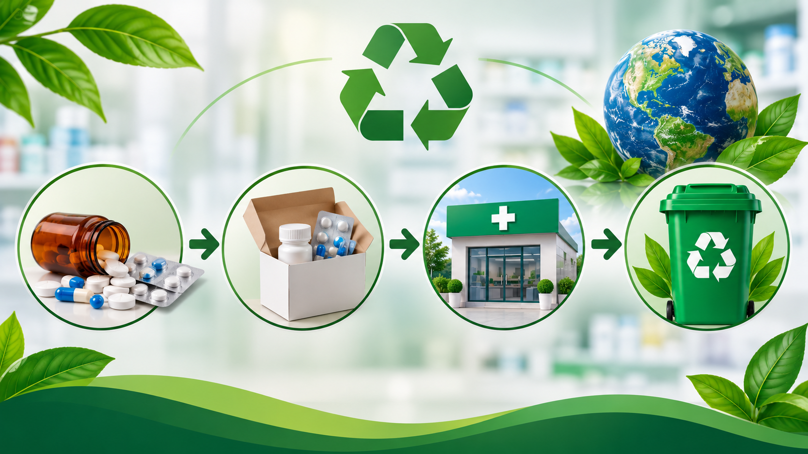

Passo a Passo: Como Descartar Medicamentos Corretamente

Como descartar medicamentos corretamente?
O descarte de medicamentos exige alguns cuidados para evitar a contaminação do meio ambiente e proteger a saúde pública. Mas você sabe o que fazer com aqueles medicamentos vencidos ou que sobraram de tratamentos? Nesta página, você encontrará um passo a passo simples e prático para identificar, separar e encaminhar esses produtos aos locais de coleta adequados. Pequenas atitudes fazem a diferença na construção de um futuro mais sustentável!
Medicamentos aceitos na coleta
Os pontos de coleta recebem diferentes tipos de medicamentos domiciliares vencidos ou em desuso, como:
- Comprimidos e cápsulas
- Xaropes e soluções
- Pomadas e cremes
- Antibióticos
- Medicamentos em gotas
- Frascos e outras embalagens que tiveram contato com medicamentos
É importante verificar as orientações do coletor, pois nem todos os resíduos de saúde são recebidos nesses pontos.
Onde descartar meus medicamentos?
Não sabe onde entregar seus medicamentos vencidos ou em desuso?
Existem pontos de coleta específicos, geralmente disponíveis em farmácias e drogarias.
Consulte o site abaixo, digite seu CEP/região, encontre o local mais próximo de você e faça o descarte corretamente.
Etapas do Descarte Correto
Identifique os medicamentos que não serão mais utilizados
Verifique os medicamentos armazenados em casa e identifique aqueles que estão vencidos, sobraram de tratamentos anteriores ou não serão mais utilizados.
Observe a data de validade nas embalagens e confira os produtos que estão esquecidos em armários e gavetas.
Separe os medicamentos e suas embalagens
Separe os medicamentos vencidos ou em desuso para encaminhá-los aos pontos de coleta apropriados.
Não misture esses produtos com o lixo doméstico. Mantenha-os em suas embalagens originais sempre que possível, facilitando sua identificação e evitando contato acidental.
Localize um ponto de coleta adequado
Procure uma farmácia ou drogaria que possua um coletor específico para medicamentos vencidos ou em desuso. Esses estabelecimentos fazem parte do sistema de logística reversa, que permite devolver os medicamentos para que recebam uma destinação ambientalmente adequada.
Você também pode consultar nossa página de Pontos de coleta para encontrar um local próximo.
Entregue os medicamentos no coletor
Ao chegar ao estabelecimento, procure o coletor identificado para o recebimento de medicamentos.
Siga as orientações indicadas no próprio recipiente, pois alguns coletores possuem compartimentos diferentes para medicamentos, embalagens e outros materiais.
Não coloque os produtos em lixeiras comuns do estabelecimento.
Separe corretamente as embalagens
Algumas embalagens podem ter destinações diferentes:
- Caixas de papelão e bulas: quando estiverem limpas e sem contato com os medicamentos, geralmente podem ser encaminhadas à reciclagem convencional.
- Blísteres (cartelas): devem ser destinados conforme a orientação do coletor, pois podem conter resíduos do medicamento.
- Frascos e tubos: devem ser entregues conforme as instruções do ponto de coleta.
Não retire medicamentos de suas embalagens nem descarte cartelas com resíduos no lixo reciclável comum.
Divulgue a informação
O descarte correto também depende da conscientização coletiva.
Compartilhe essas informações com familiares e amigos, incentive hábitos responsáveis e ajude outras pessoas a entenderem a importância de dar aos medicamentos uma destinação adequada.